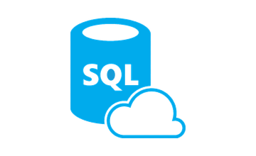
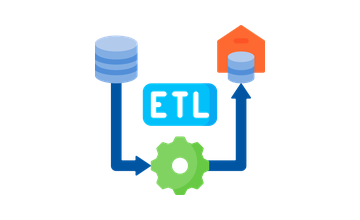
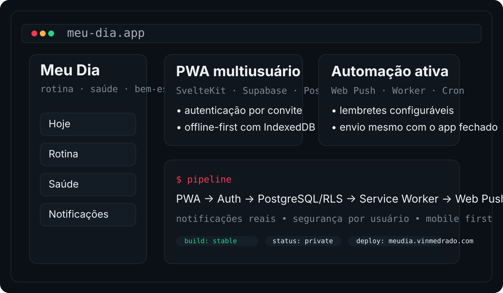

Technologies used in automation, BI, integrations and published projects.

SQLData / ETL
ETLPipelinesNumbers from the resume — tied to real deliveries.
Corporate trajectory and outcomes tied to context, technology and impact.
- 97% reduction in daily NPS reporting: 13 min → ~20 s with Python, including extraction, historical comparison, validations and PowerPoint generation.
- Restructured 4 Customer Experience scorecards and reduced a Power BI model from 158 MB → 56 MB while preserving historical data.
- Pre-load validation before Brazil + South America Dataflows and semantic models, reducing the risk of publishing inconsistent data.
- Python, VBA and Access automations integrated with Outlook, SAP-MM and Oracle CRM for process validation and document handling — the fiscal-receipt system led another area to invite me on as a Financial Analyst (mid-level).
- 81% reduction in validation time: ~3 min → 34 s with Python + OCR/IDP + corporate integrations.
- Document-intelligence workflow with OCR and human review for classification and CPF/CNPJ validation.
- Experience across fiscal, finance, export/logistics and direct-sales operations; more than 5,000 invoices processed in one month in SAP with zero errors — promoted to Junior Financial Analyst afterward.
- Processed 20,000+ vehicle import invoices and service invoices through internal systems and SAP-MM.
Projects selected for relevance to automation, integrations, data and product engineering.
Applymize
AUTOMATION / WORKFLOWPlatform that centralizes job collection, deduplication, fit analysis and pipeline organization while keeping human review before final actions.
 View project →
View project →Meu Dia
PWA / FULL STACKMulti-user PWA with SvelteKit, Supabase Auth, PostgreSQL/RLS, offline support, Web Push and server-side authorization rules.

View project →Marketplace Seller Platform
APIs / AUTOMATIONPlatform with real Mercado Livre OAuth2, FastAPI, multi-tenant PostgreSQL and raw → staging → mart pipelines orchestrated with Airflow.
 View project →
View project →VinanceOS
DATA / MLFull-stack platform with per-decision audit trail (decision_id, immutable snapshots, model/rule versioning) and Walk-Forward validation with an automated anti-reoptimization test, running in a simulation environment.
 View project →
View project →Talk to the system — type a command or use the shortcuts. help lists everything.
Automation, data and systems — full resume available in PDF.
Santo André, SP · 6 years in the GM Brazil / Stellantis chain · author projects in production and public demos.
GitHub: /vinmedrado